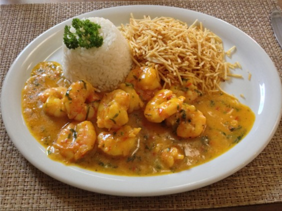

Bobó de Camarão

Descrição:
O bobó de camarão é uma iguaria que encanta paladares com sua mistura única de ingredientes e texturas. Esta receita é uma combinação perfeita entre a cremosidade do purê de mandioca e a suculência dos camarões, temperada com um toque especial de ervas e especiarias. Feito com ingredientes facilmente encontrados, como camarões frescos, mandioca, leite de coco, azeite de dendê, entre outros temperos, o bobó de camarão é um prato típico da culinária brasileira que conquista pelo seu sabor marcante e ao mesmo tempo afetuoso.
O preparo desse prato é um verdadeiro deleite: a mandioca é cozida até ficar macia, transformada em um purê cremoso e misturada com os camarões refogados em um caldo de sabores irresistíveis. Ideal para surpreender a família e os amigos em um almoço especial ou jantar descontraído, o bobó de camarão é uma escolha certeira para quem busca uma experiência gastronômica cheia de sabores tropicais.
Ingredientes (6 porções)
- 1kg de camarão fresco
- 3 dentes de alho picados e amassados
- Pimenta do reino
- 3 cebolas (1 cortada em rodelas e 2 raladas)
- 6 colheres (sopa) de azeite de oliva
- 1 maço de cheiro-verde picado
- 2 pimentões verdes bem picadinhos
- Sal
- Suco de 1 limão
- 1kg de mandioca (prefira as que já vem embaladas e descascadas, é mais prático)
- 1 folha de louro
- 2 vidros de leite de côco
- 2 latas de molho pronto de tomate
- 2 colheres (sopa) de azeite de dendê
Modo de preparo
- Lave os camarões e tempere com sal, alho, pimenta e limão, deixe marinar.
- Pegue uma panela com água e cozinhe a mandioca em pedacinhos, com louro e a cebola em rodelas.
- Quando estiver mole, acrescente um vidro de leite de coco.
- Deixe esfriar um pouco e bata no liquidificador.
- Esquente o azeite de oliva, junte a cebola ralada e deixe dourar.
- Acrescente os camarões e frite.
- Adicione as 2 latas de molho de tomate, o cheiro-verde, o pimentão e deixe cozinhar por alguns minutos.
- Junte na mesma panela, a mandioca batida no liquidificador, outro vidro de leite de coco e o azeite de dendê.
- Deixe levantar fervura e está pronto.
Tempo de preparo: 1h